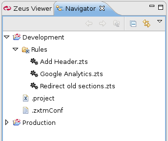

Fig.1: The Perspective Selector (with Zeus selected)
A perspective is a group of views and editors in the main Eclipse window that make up an environment suitable for a particular development purpose. The Zeus plug-in provides a suitable perspective for TrafficScript rule development, and this can be selected via the menu bar under "Window -> Open Perspective -> Other.." or by clicking the 'Add perspective' icon in the Selector and choosing 'Other...'. If you have correctly installed the Zeus plug-in, the Zeus perspective should be available in the subsequent list.
Once selected, Zeus will be added to the list of available perspectives, and the windows and icons will arrange themselves into the structure defined within the perspective, ready for use. Zeus will appear as the current perspective in the Selector control.
The Zeus perspective is made up of three main window panes:
Fig.2: The Main Window
The Zeus Viewer tab will list the currently active Zeus projects, and the rules associated with each one. This pane allows you to manipulate (copy/move/delete etc) the rules by using the right mouse menu or dragging them.
The Navigator tab is an alternative view of the same information, but given as a file system. Each Zeus project will still appear, but rules will be listed under a Rules sub-folder. This sub-folder is essentially a short-cut (or symbolic link) to indicate that these rules exist on a Zeus instance, and not actually on your local file-system. Note how each rule has the extension .zts - simply used to identify files of this type. The .project and .zxtmConf files are internal plug-in config files and should not be edited manually.
Fig.3: The Navigator tab
The Editor pane provides the means to add or edit rules, and to view the output of various other Eclipse operations.
Finally, there is a tasks and problems pane at the bottom of the screen. Any errors, warnings or informational messages encountered are displayed in the Problems tab. Any task labels are displayed in the Tasks tab. More information about Tasks can be found on the Task Markers page.